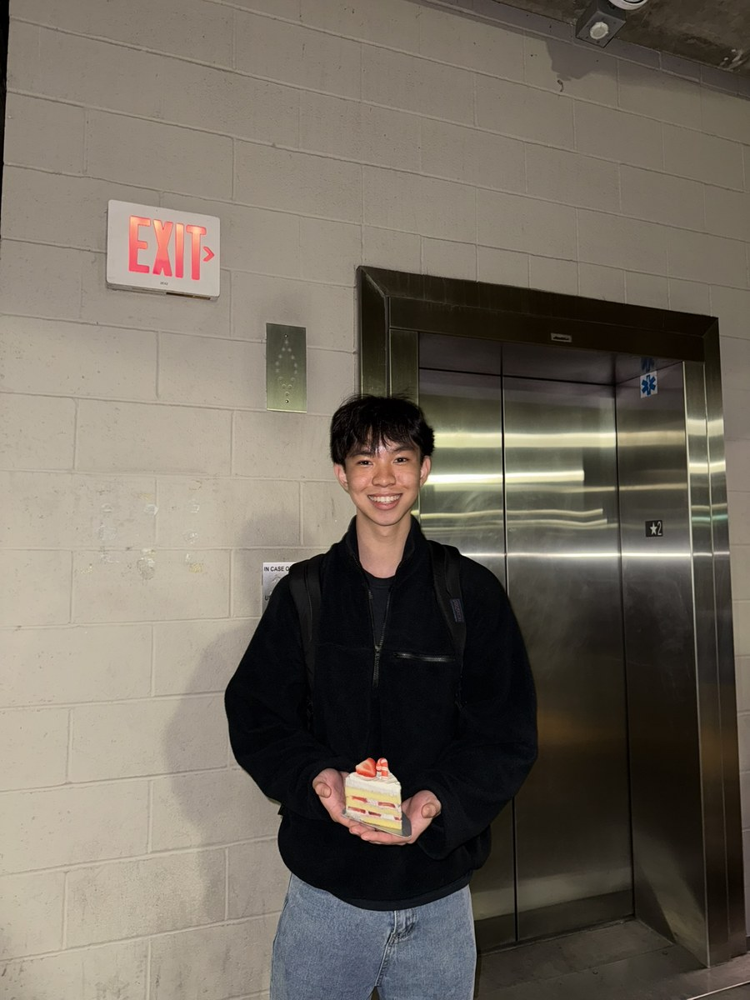
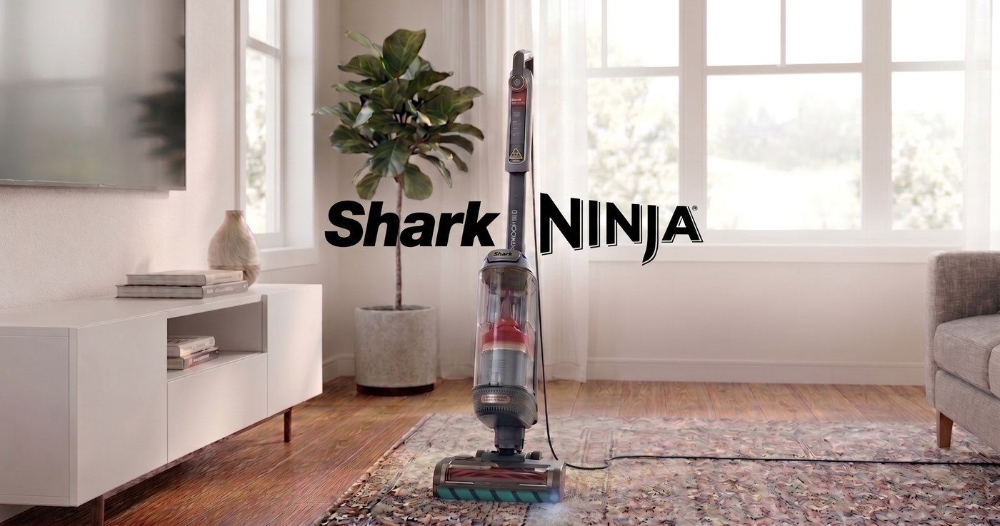
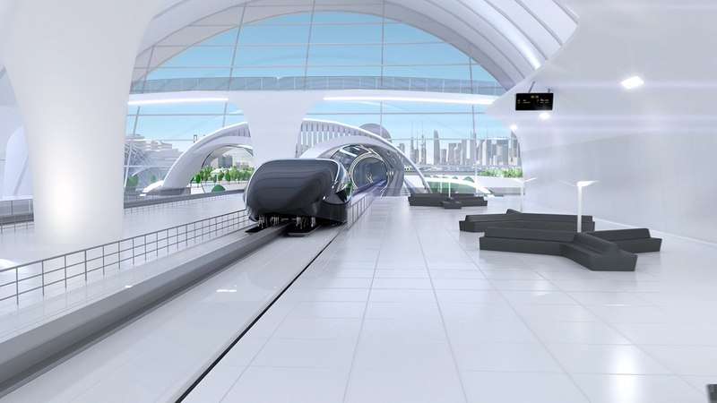
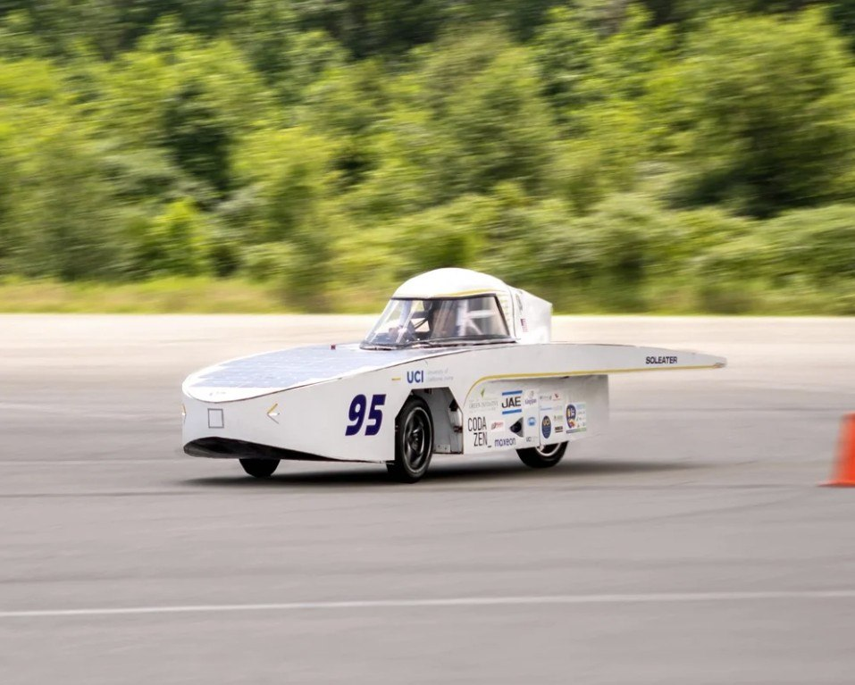
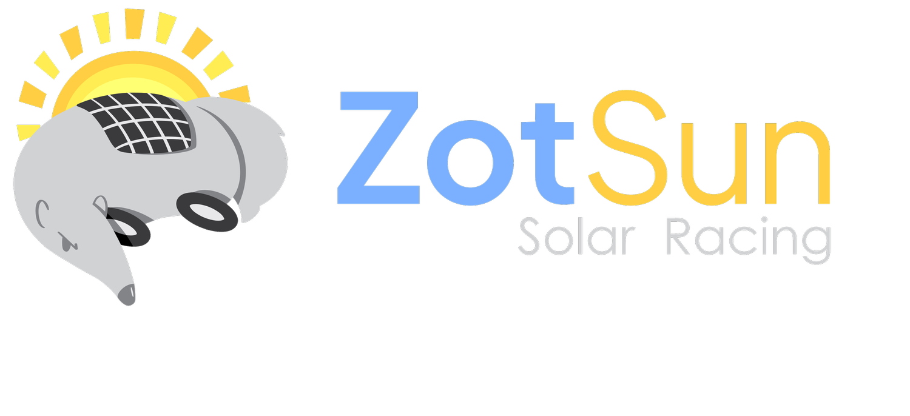
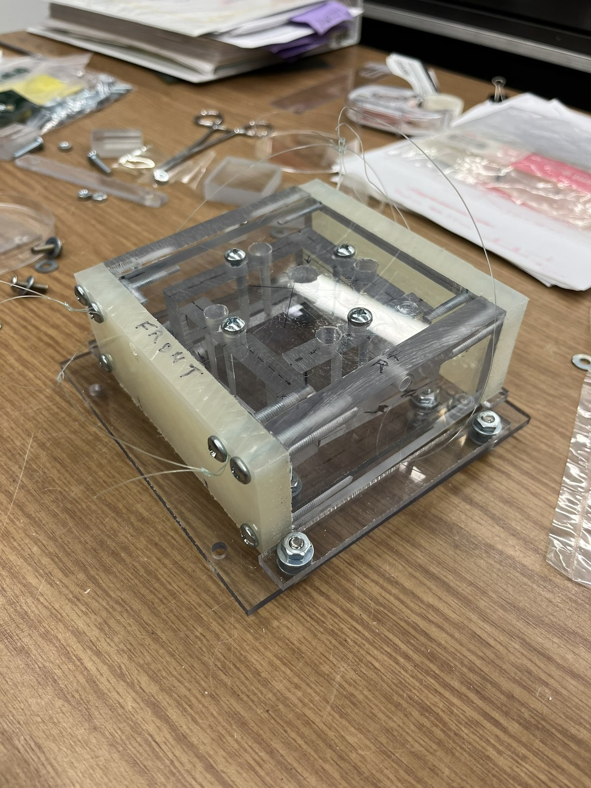
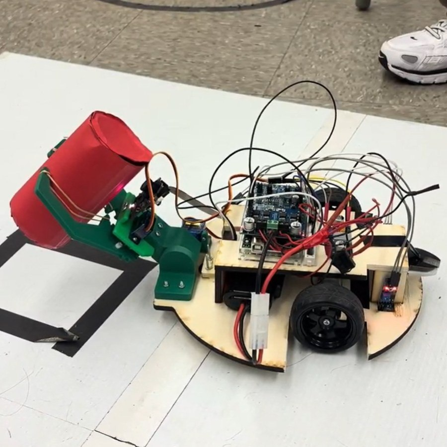
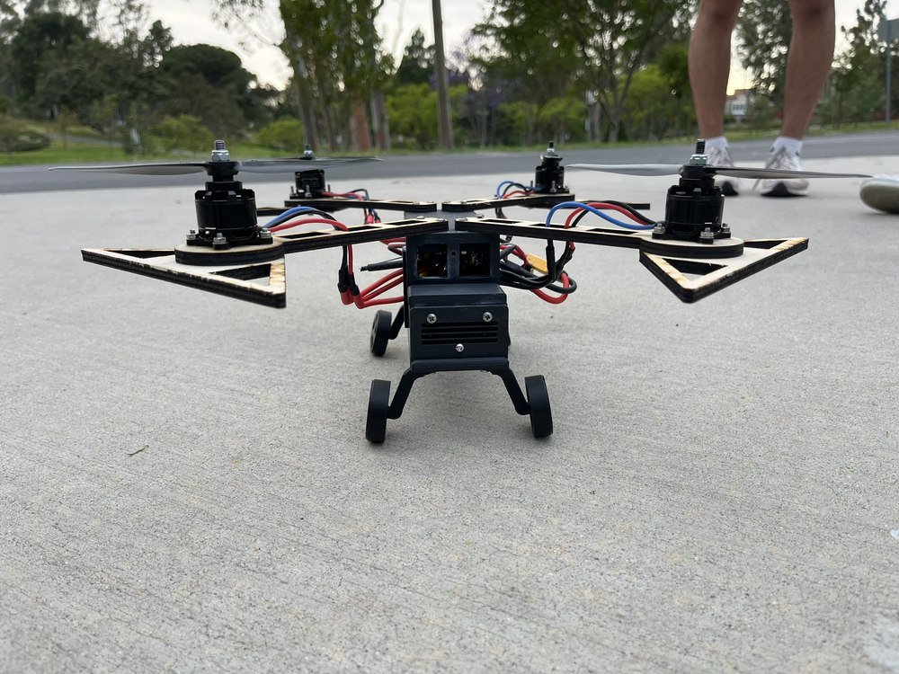
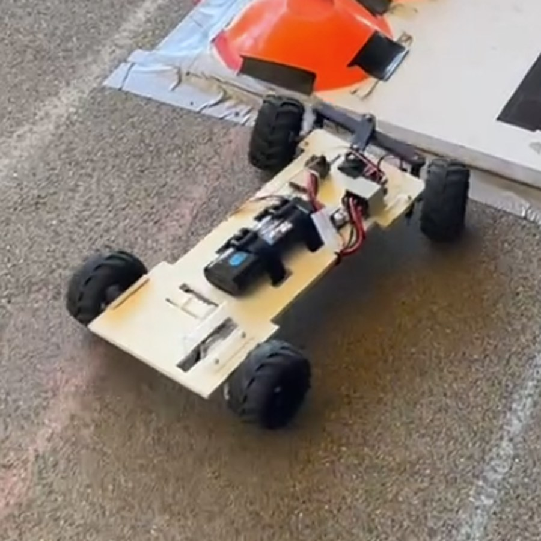
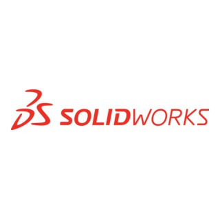

Hi! I'm Ethan Tran.
Mechanical engineer with industry experience in medical devices and consumer tech, having driven hardware from prototype through launch. Currently exploring how that experience bridges into product and tech.
Skating · Vince Guaraldi Trio
Work

Jan – Jun 2026Projects
Engineering

Jul 2026 – Present

Apr 2025 – Jun 2026
Feb 2025 – Jun 2026
Jan – Mar 2025
Jan – Jun 2025
Sept – Dec 2024
Product
About
More about me.
Throughout my time in engineering, my strengths have been my product-driven mindset and a user-centric approach to design. I prioritize solving the right problem for the user before we ever dive into building the solution.
Currently, I am conducting verification & validation for novel medical devices at Scientific Horizons and am developing a hyperloop pod with UCI HyperXite. In the past, I've driven a flagship vacuum to production at SharkNinja through iterative prototyping and testing and built UCI's first-ever solar car with UCI Solar Car.
In my free time, you'll find me plugged into Spotify while staying active with climbing 🧗, basketball 🏀, volleyball 🏐, and pickleball 🏓, or messing around on the piano 🎹. Most importantly, I'm always down to chat (especially about the Lob City Clippers or all things music)!